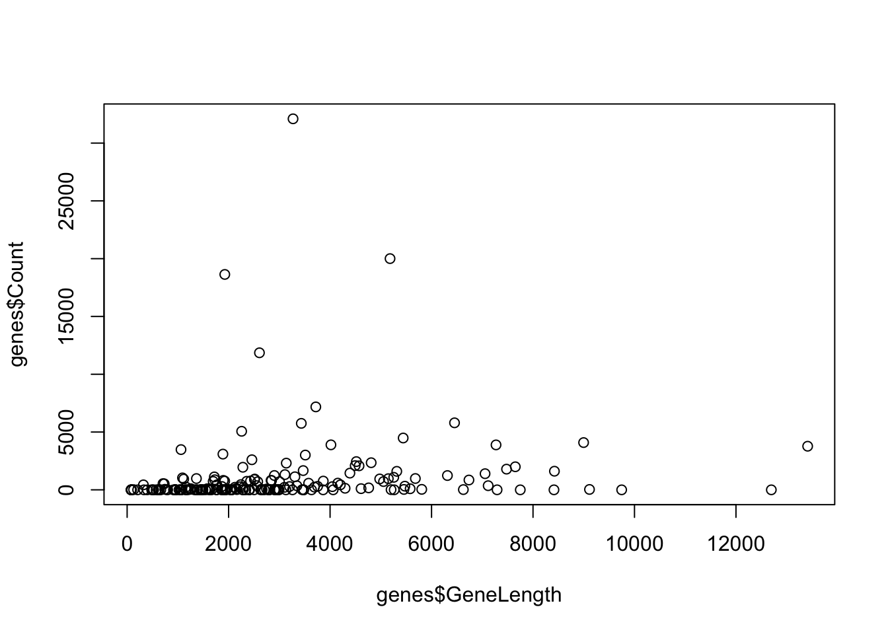
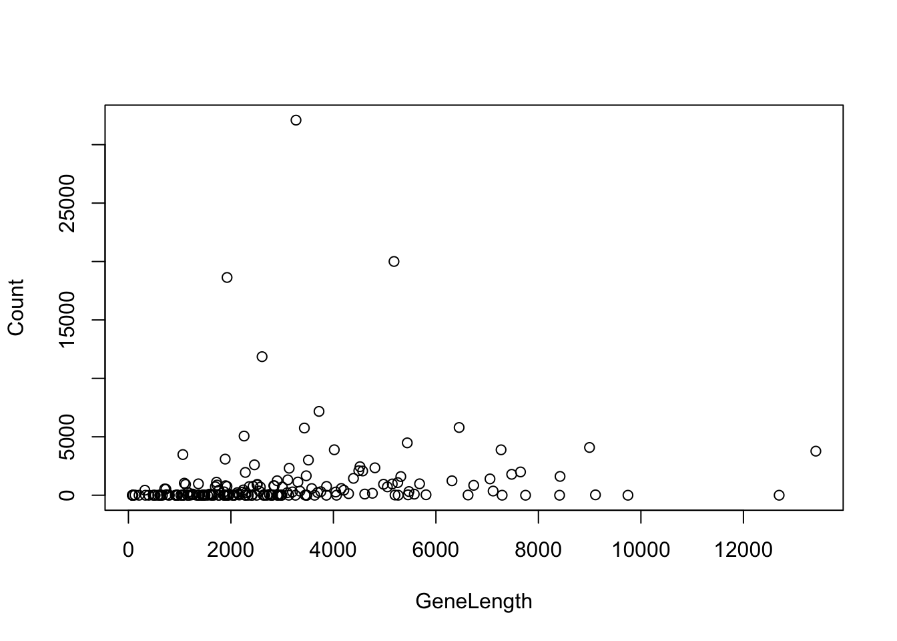
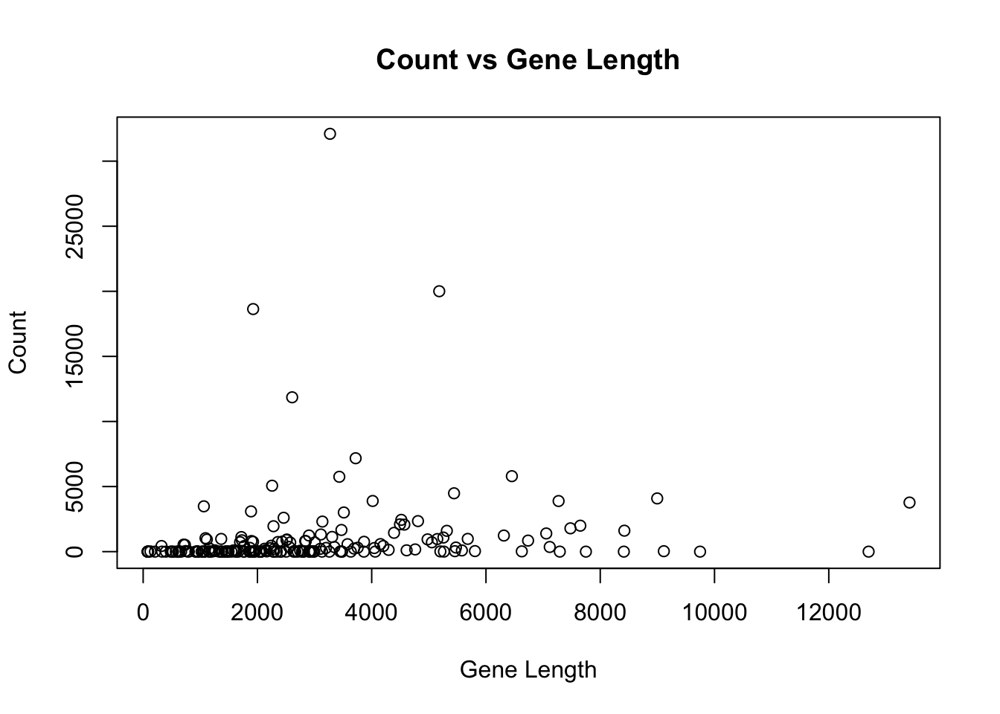
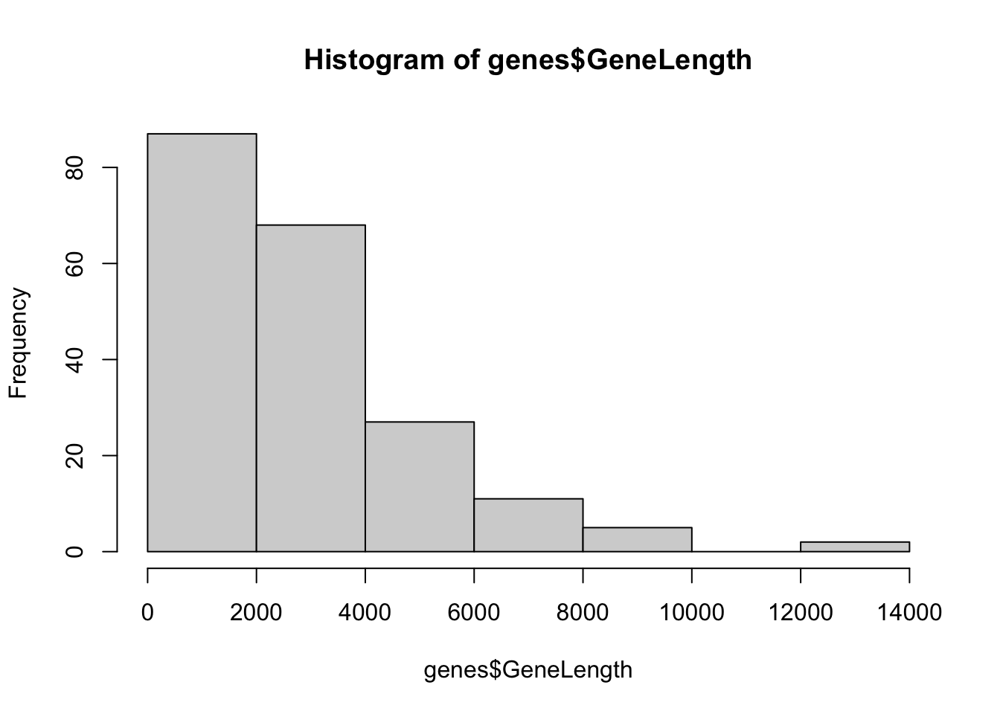
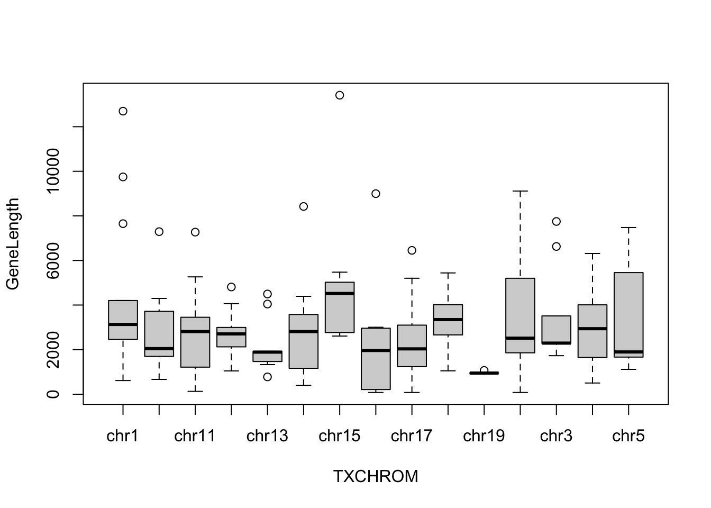

Chapter 3 Session 3
In the last session we learned about:
- Missing values
- Subsetting data structures
- How to merge two dataframes
In this session we will learn:
- Basic plotting
- The list data structure
- Classes
- The DGEList object from the package limma
3.1 Basic plotting
R is great for creating publication quality plots. There is an enormous number of plotting functions available through external packages, but we’ll only briefly cover the basic plots included with R.
We will use our genes data from the previous session to demonstrate the plots.
genes <- read.delim(
"data/Ses2_genes.tsv",
stringsAsFactors = FALSE,
na.strings = c("NA", "missing", "Missing")
)3.1.1 Scatter plots
Scatter plots can be created using the plot() function. This plot is used to
compare two variables against each other.
There are two ways to use plot(), by specifying the x and y variables or by
putting in a special notation using ~. For the version using x and y values
the input the equal length vectors for x and y axis values as two arguments.

For the version using ~ you put in y ~ x as column names from a data frame and the data frame to be used as arguments.

The basic scatter plot has many options that can be found in the help page. For example we can change the title of the plot, the axes and the take the log of one axis.
plot(
Count ~ GeneLength,
data = genes,
main = "Count vs Gene Length",
xlab = "Gene Length",
ylab = "Count"
)
3.1.2 Histograms
Histograms are used to show the distribution of single variables. In R they
are created using the hist() function.

3.1.3 Boxplots
Box plots are used to visualise the distribution of values by their medians,
quartiles and interquartile ranges. It can be useful for comparing the
distribution of multiple groups. The simplest way to create a boxplot is to
use the format x ~ group, where x is the variable on the y-axis and group
is the grouping variable along the x-axis.
For example we can create box plots of the gene lengths across chromosomes.

Challenge 3.1
Plot the gene length against the log of the counts.
Using arguments in the “Details” section of the
plot()function’s help page, change the plotting symbol from circles to solid dots.Find the argument in the help page of
hist()that allows you to create a histogram that is broken into 40 cells/bins. Create the histogram with 40 cells. Set the title of the plot to “Histogram of gene lengths” and the x-axis label to “Gene length”.Find and use the argument of
boxplot()that allows the boxplots to be drawn horizontally.
3.2 Lists
We previously saw the data structures vectors, matrices and data frames. These help us track collections of related data values using a single variable. Another fundamental data structure is a list, it is like a vector in that it is 1-dimensional. However, the list can contain any combination of data types within itself, even another list.
## [[1]]
## [1] 1
##
## [[2]]
## [1] "a"
##
## [[3]]
## [1] 1.5Not only can you put different data types into a list, you can also put a data data structure into one element of a list. In the list below, the first element is a vector that contains 3 numbers, the second element is a character and the third element is a data frame that has two columns.
list(
c(1, 2, 3),
c("words", "letters"),
data.frame(
column1 = c(1, 2, 3),
column2 = c("a", "b", "c")
)
)## [[1]]
## [1] 1 2 3
##
## [[2]]
## [1] "words" "letters"
##
## [[3]]
## column1 column2
## 1 1 a
## 2 2 b
## 3 3 cThe output can often help you understand how the list is structured. The double
brackets (e.g. [[1]]) signifies an element of the list and which index it is
at. Underneath the [[1]] and [[2]], there is a [1] - this indicates that
the first and second elements both contain a vector. Underneath [[3]] you see
the standard output for a data frame, which we have seen before.
You can have a list as an element of a list, so this can extend into a hierarchical structure resembling folders in a computer.
## [[1]]
## [1] 1
##
## [[2]]
## [[2]][[1]]
## [1] 1
##
## [[2]][[2]]
## [1] "a"- The first element, indicated by
[[1]], is a vector, indicated by the[1]underneath. - The second element, indicated by the first
[[2]]contains a list:[[2]][[1]]- tells you that the second element is a list, of which the first element of the inner list is the number 1.[[2]][[2]]- tells you that the second element is a list, of which the second element of the inner list is “a”.
Many Bioconductor packages, including limma, use lists so it is an important data structure to understand.
3.2.1 Indexing lists
We can access elements of a list using square brackets. You may have noticed that there are often double square brackets [[]]. There is a subtle but important difference between single square brackets and double square brackets when subsetting lists.
- Single brackets
[]will return a list. - Double brackets
[[]]will return elements of the list.
To demonsterate, let’s make a list:
Take a look at the output of obtaining the first element with single square brackets and double square brackets:
## [[1]]
## [1] "a" "b"## [1] "list"## [1] "a" "b"## [1] "character"The difference is minor; with my_list[1] there is an extra [[1]] at the top, with my_list[[1]] there is no [[1]] at the top. Using single brackets is taking a subset of the list, but still as a list structure, while using double brackets unwraps the value from within the list.
The str() function gives us some more information:
## List of 1
## $ : chr [1:2] "a" "b"## chr [1:2] "a" "b"This tells us that when you use single brackets, the output is a list containing one element, which is a vector. When you use double brackets, the output is just a vector, not contained within a list.
3.2.2 Chaining list indices
Because of the hierarchical or folder-like nature of lists, you may have to index multiple times to get to the value you want. To do this we can chain indexes together, they are applied from left to right.
## [1] "a" "b"## [1] "a"3.2.3 Named list
Traversing a list using numeric indices can get very confusing very quickly. It is easy to make mistakes and code containing only numeric indices becomes extremely difficult to decipher. So often it is wise to create named lists, where each element has name that will help with context on the values stored.
## $name
## [1] "Andy" "Sally"
##
## $age
## [1] 32 40If your list is named, you can use $ or a character value to access elements.
The following two approaches are identical.
## [1] "Andy" "Sally"## [1] "Andy" "Sally"You can use the names() function on a list to find all the names at the
first layer.
## [1] "name" "age"Assigning values to elements of a list that don’t exist adds that element onto the list.
## $item
## [1] "banana"
##
## $weight
## [1] 120## $item
## [1] "banana"
##
## $weight
## [1] 120
##
## $price
## [1] 10Much like how indices can be chained together, named access of elements can also be chained together.
person <- list(
name = "Alice",
address = list(
home = "123 Home Street",
work = "321 Work Street"
)
)
person$addres$home## [1] "123 Home Street"Challenge 3.2
Using our
genesdata frame, create a listgenes_listcontaining 3 elements: “chr1”, “chr2” and “chr3” where each element contains the subset data frame of genes belonging to that chromosome.Use str to inspect the following list and access the value “success!” using both double bracket numeric indices and named $ indices.
maze_list <- list(a = "nope", b = list(x = "nope", y = list(i = "nope",
ii = "nope"), z = list(i = "nope", ii = "nope", iii = "success!")),
c = "nope")- Create a list “my_gene” that has the follwing structure.
> str(my_gene)
List of 4
$ entrezID : num 59272
$ ensemblID: chr "ENSG00000130234"
$ position :List of 4
..$ chromosome: chr "chrX"
..$ strand : chr "-"
..$ start : num 15561033
..$ end : num 15602158
$ enhancers: chr [1:2] "GH0XJ015596" "GH0XJ015579"3.3 Classes
Everything in R is an ‘object’, each object falls under a ‘class’. A class defines the properties an object and determines what can be done with it. These are analogous to file formats of regular files on the computer.
We have seen the basic classes of objects such as character, numerics and
logicals. Bioconductor packages often define their own classes in order to
represent more complex data. For example, the limma package uses the DGEList
class. This is a class that is designed for storing read count data from RNA
sequencing. It is a special ‘list’ that must contain two components:
counts- which must be a numeric matrix, that stores counts. Each row must be a gene and each column must be a sample.samples- which must be a data frame, that contains information about each sample. Each row must be a sample and must contain information about the group (e.g. treatment group) the sample belongs to, the library size of that sample and the normalisation factor for that sample.
There are also a number of optional components of the DGEList class, such as
a data frame containing gene annotation information.
The main purpose of having a special class rather than just a regular list is to guarantee specific properties on the data. For example the samples data frame must have the same number of rows as the counts matrix has columns. These constraints allow methods developers to create functions with confidence in what data is present within the objects.
3.4 Packages
In addition to the functional included in a vanilla R installation, an enormous
amount of functionality exists in external packages that can be installed using
install.packages() function or via the ‘Packages’ tab.
Note that install.packages() will only find packages in the default CRAN
repository. Most Bioinformatics softwares are in a separate repository called
Bioconductor, packages from Bioconductor can be installed through the
‘BiocManager’ package. To do this you first need to install ‘BiocManager’ from
CRAN, then we can use it to install the Bioconductor packages ‘limma’ and
‘edgeR’.
Once a package is installed, you can load it in the make all the functions within available. This is done using the ‘library’ function. Note that quotation marks are not required around the package name, this is a rare behaviour granted to the library function to save some typing because it’s so commonly used.
## Loading required package: limma3.4.1 DGEList
The RNA sequencing analysis we will go through is a simplified version of that performed in the article from Law et al. (Law et al. 2016). The RNA sequencing data we will use is from Sheridan et al. (Sheridan et al. 2015). It consists of 9 samples from 3 cell populations; basal, luminal progenitor (LP) and mature luminal (ML), which has been sorted from the mammary glands of female virgin mice. The reads have been aligned to the mouse reference genome (mm10) and reads summarised at the gene-level (using mm10 RefSeq-based annotation) to obtain gene counts. Gene level summarisation involves counting the number of reads mapped to each gene, for each sample. The resulting ‘count of reads’ is often referred to simply as ‘counts’.
Each data file corresponds to one sample and thus there is one data file for each sample. Each data file details the number of reads mapped to every gene for the sample corresponding to that data file. Within each data file, there are 3 columns - ‘EntrezID’, ‘GeneLength’ and ‘Count.’ ‘EntrezID’ and ‘GeneLength’ gives the EntrezID and gene length of one gene and ‘Count’ gives the number of reads mapped to that gene. The first four lines of one file (and thus one sample) is shown below:
EntrezID GeneLength Count
497097 3634 2
100503874 3259 0
100038431 1634 0
19888 9747 1We will be looking at 9 samples (and using 9 data files) in total. Their details are shown below:
| File name | Sample name | Phenotype group |
|---|---|---|
| GSM1545535_10_6_5_11.txt | 10_6_5_11 | LP |
| GSM1545536_9_6_5_11.txt | 9_6_5_11 | ML |
| GSM1545538_purep53.txt | purep53 | Basal |
| GSM1545539_JMS8-2.txt | JMS8-2 | Basal |
| GSM1545540_JMS8-3.txt | JMS8-3 | ML |
| GSM1545541_JMS8-4.txt | JMS8-4 | LP |
| GSM1545542_JMS8-5.txt | JMS8-5 | Basal |
| GSM1545544_JMS9-P7c.txt | JMS9-P7c | ML |
| GSM1545545_JMS9-P8c.txt | JMS9-P8c | LP |
To create a DGEList object, we will use the readDGE() function. There are three important arguments to this function:
files- a vector of data file namespath- the path to the directory that contains your data files. If the data files are in your working directory, don’t worry about this argument. If the data files are somewhere else, like a folder called ‘data’, in your working directory you must give the path to that foldercolums- the columns of the input files which have the gene names and counts respectively (as the column indices)
First, we will create a vector of the file names. You can simply copy and paste this code into your R script.
files <- c(
"GSM1545535_10_6_5_11.txt",
"GSM1545536_9_6_5_11.txt",
"GSM1545538_purep53.txt",
"GSM1545539_JMS8-2.txt",
"GSM1545540_JMS8-3.txt",
"GSM1545541_JMS8-4.txt",
"GSM1545542_JMS8-5.txt",
"GSM1545544_JMS9-P7c.txt",
"GSM1545545_JMS9-P8c.txt"
)Next, we will create our DGEList object. I have put my data files in a folder
called “data” (within my working directory). Thus, I must specify
path = "data". Depending on where you have put your data files, you may need
a different input to path or not have to include the path argument
(if your data files are NOT within a folder in your working directory).
## [1] "DGEList"
## attr(,"package")
## [1] "edgeR"The readDGE() function uses the read counts from our 9 data files
(and thus 9 samples) to create a DGEList object containing count information
for all 9 samples and every gene included in our data files.
It has 2 elements, one named samples and one named counts. For small enough
matrices, if you are using RStudio, you can take a look at each using View():
Note that the column names are the file names. The DGEList object was created
using the information in the “.txt” files. The function readDGE() has used the
file name as the name of each sample because we have not told readDGE() what
the sample names are. It has therefore simply used the file names. This makes
logical sense as each file contained the count data for one sample.
The samples data frame can also be viewed:
The output should look something like this:
Figure 3.1: View of the samples data frame from the DGEList object we created and called x.
This is a data frame where each row is 1 sample, and details of each sample is given in the 4 columns.
filesgives the file names.groupdetails the phenotype group the sample belongs to. As we have not specified this yet, the default1is given for each sample.lib.sizegives the library size. This is the total sum of all counts for that sample.norm.factorsthis gives the normalisation factor for each sample. As we have not calculated any normalisation factors, this is 1 for each sample.
This data frame also has row names, which are currently the file names of each
sample. Again, because we have not told readDGE() what the sample names are,
it has used the file names.
Let’s change the row names to be the sample names, instead of the full file name (see Table 3.1).
We can do this by first creating a vector of sample names. You can simply copy and paste the code below into your R script.
samplenames <- c("10_6_5_11", "9_6_5_11", "purep53", "JMS8-2", "JMS8-3",
"JMS8-4", "JMS8-5", "JMS9-P7c", "JMS9-P8c")We can change the row names in the samples data frame using the rownames()
function. This function will give you the row names of a data structure (a data
frame in this instance):
## [1] "GSM1545535_10_6_5_11" "GSM1545536_9_6_5_11" "GSM1545538_purep53"
## [4] "GSM1545539_JMS8-2" "GSM1545540_JMS8-3" "GSM1545541_JMS8-4"
## [7] "GSM1545542_JMS8-5" "GSM1545544_JMS9-P7c" "GSM1545545_JMS9-P8c"We can see that the row names are the file names as we saw above. To replace these file names with the sample names we can run:
Challenge 3.3
Create a box plot of the library sizes of the samples.
Find the following information:
- How many genes are there in
dge? - How many samples are there in
dge? - Which sample has the smallest library size?
- Which sample has the largest library size?
Law, Charity W, Monther Alhamdoosh, Shian Su, Gordon K Smyth, and Matthew E Ritchie. 2016. “RNA-Seq Analysis Is Easy as 1-2-3 with Limma, Glimma and edgeR.” F1000Research 5.
Sheridan, Julie M, Matthew E Ritchie, Sarah A Best, Kun Jiang, Tamara J Beck, François Vaillant, Kevin Liu, et al. 2015. “A Pooled shRNA Screen for Regulators of Primary Mammary Stem and Progenitor Cells Identifies Roles for Asap1 and Prox1.” BMC Cancer 15 (1): 221.
References
Law, Charity W, Monther Alhamdoosh, Shian Su, Gordon K Smyth, and Matthew E Ritchie. 2016. “RNA-Seq Analysis Is Easy as 1-2-3 with Limma, Glimma and edgeR.” F1000Research 5.
Sheridan, Julie M, Matthew E Ritchie, Sarah A Best, Kun Jiang, Tamara J Beck, François Vaillant, Kevin Liu, et al. 2015. “A Pooled shRNA Screen for Regulators of Primary Mammary Stem and Progenitor Cells Identifies Roles for Asap1 and Prox1.” BMC Cancer 15 (1): 221.